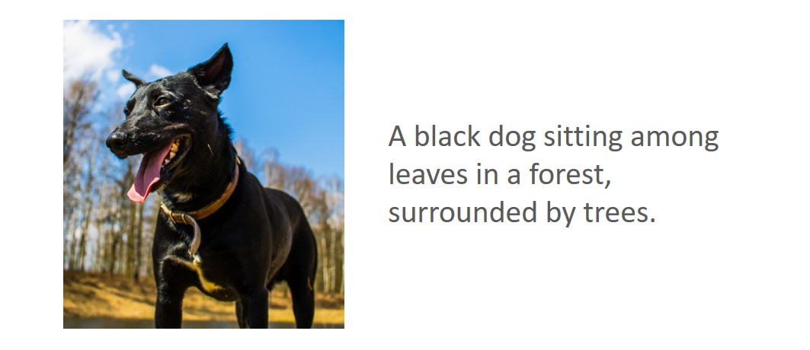
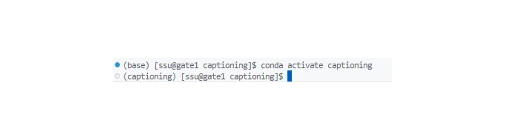
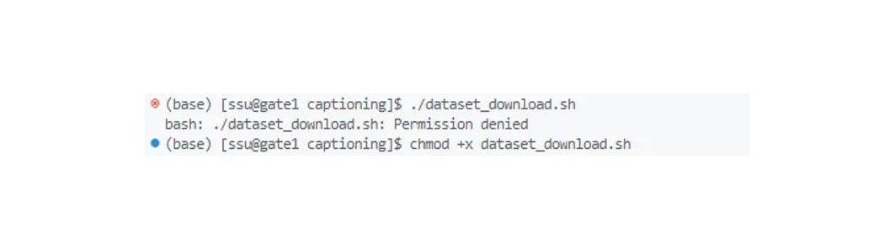
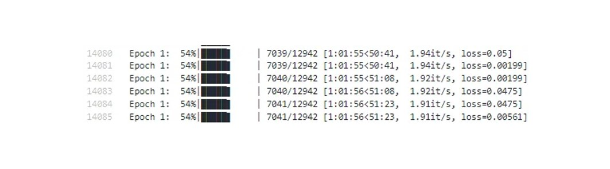
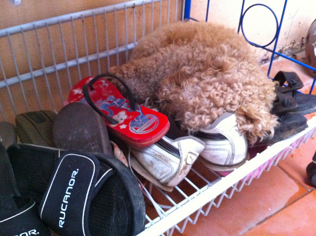

# gpu5 파티션 노드에 진입
srun --pty -p gpu5 -c 2 /bin/bash
# dockerhub에서 원하는 이미지를 다운로드
enroot import docker://eclipse/ubuntu_python
# 다운로드된 이미지 ubuntu.sqsh를 컨테이너로 만듦
enroot create -n mycontainer eclipse_ubuntu_python.sqsh
# 컨테이너 환경에 진입
enroot start --root --rw --mount .:/mnt ubuntu-test /bin/bashUBAI PRACTICE - Captioning
Python 프로젝트의 일환으로, 이미지 캡셔닝(Image Captioning) 프로젝트를 진행해보겠습니다.
이미지 캡셔닝이란, 주어진 이미지를 설명하는 문장을 만들어내는 것을 의미합니다.
예를 들어, 아래와 같은 이미지가 모델에 입력되게 되면, 모델은 “A black dog sitting among leaves in a forest, surrounded by trees.(검은 개가 숲 속 나무들 사이에서 나뭇잎에 둘러싸여 앉아 있는 모습.)”이라는 캡션이 나오게 됩니다.

이러한 캡셔닝 모델을 학습하기 위한 실습을 시작해보도록 하겠습니다.
1. 경로 및 환경 설정
프로젝트 수행에 앞서, 항상 주의해야 할 부분은 경로와 환경입니다.
경로 설정
먼저 임의의 프로젝트 폴더를 생성하겠습니다. 저는 captioning 이라는 폴더를 생성하였습니다. Terminal에서도 해당 경로에서 작업한다는 것을 알려주기 위해, cd 명령어를 통해 작업 폴더(captioning 폴더)로 진입하겠습니다.
📌 참고사항
명령어 pwd는 현재 작업 경로를 확인하는 코드입니다.
명령어 cd는 이동하고자하는 작업 경로를 지정하는 코드입니다.
환경 설정
다음 프로젝트를 수행하기 위한 가상환경을 생성하겠습니다.
- enroot 가상환경
가상환경을 생성하고 활용하는 데에는 여러 방법이 있으나, 그 중 enroot를 활용하여 버전 호환이 이루어진 가상환경을 구축하는 것을 추천드립니다.
계산 노드에 진입하여 필요한 프레임워크와 OS 버전을 맞춰 enroot를 실행시킵니다.
이후 계산에 필요한 이미지를 다운받고 컨테이너를 실행시킵니다.
- conda 가상환경
이 외에도 conda를 통해 가상환경을 생성하여 활용하실 수 있습니다.
conda create -n captioning python=3.8 명령어를 통해 python 버전 3.8을 가진 captioning 이라는 이름의 가상환경을 생성합니다.
이후 conda activate captioning으로 가상환경에 진입합니다.

pip install -r requirements.txt 명령어를 입력하여 필요한 라이브러리를 다운받겠습니다.
💡 라이브러리를 다운받을 때에는 OS와 라이브러리 등 간의 버전 호환에 반드시 유의하세요! 버전 호환이 되지 않으면 에러가 발생할 수 있습니다!
# requirements.txt
torch==1.13.1+cu118
torchvision==0.14.1+cu118
transformers==4.24.0
matplotlib==3.5.3
jupyter==1.0.02. 데이터셋 다운로드
캡셔닝 모델을 학습하기 위해 사용할 수 있는 데이터셋은 매우 많습니다. 우리는 그 중 Microsoft COCO (이하 MS COCO) 데이터셋을 활용해보고자 합니다.
MS COCO는 Object detection(물체 탐지), Segmentation(분류), Captioning에 주로 사용되는 데이터셋으로, 컴퓨터 비전 분야에서 넓은 폭으로 사용되고 있는 데이터셋입니다.
MS COCO 데이터셋 다운받기 위한 shell 스크립트 파일을 작성하겠습니다.
#!/bin/bash
# COCO dataset directory
mkdir -p /data/coco
# Download COCO Train2014 images and captions
cd /data/coco
wget http://images.cocodataset.org/zips/train2014.zip
wget http://images.cocodataset.org/zips/val2014.zip
wget http://images.cocodataset.org/annotations/annotations_trainval2014.zip
# Unzip the dataset
unzip train2014.zip
unzip val2014.zip
unzip annotations_trainval2014.zip✔ mkdir 명령어를 통해 data를 저장하고자 하는 경로를 명시해주세요. mkdir는 해당 경로를 생성해주는 명령어입니다.
✔ cd 명령어를 통해 생성한 경로로 진입합니다.
✔ wget 명령어를 통해 MS COCO dataset을 저장할 수 있는 인터넷 사이트로 접속하여, 파일을 다운로드 받습니다.
✔ unzip 명령어를 통해 저장한 dataset의 zip파일을 압축해제하여, 사용할 수 있는 형태로 둡니다.
파일 작성이 완료되었다면, 이제 shell 스크립트 파일을 실행해보도록 하겠습니다.

바로 datset_download.sh 명령어를 통해 shell 파일을 실행하다보면, “permission denied (권한 오류)”가 발생할 수 있습니다. 파일 실행 권한을 가지기 위해, chmod 명령어를 사용합니다.
chmod 명령어는 파일의 권한을 바꿔주는 리눅스 명령어로, 명령어 구성은 다음과 같습니다.
chmod [references][operator][modes] file1 ...| operator | role |
|---|---|
| r | 읽기(read) |
| w | 쓰기(write) |
| x | 실행(execute) |
우리가 실행한 명령어 chmod +x [file_name.sh]는 +x를 통해 실행하는 권한을 [file_name.sh]에 부여한 것입니다.
파일 다운로드가 시작되었습니다.
모든 파일이 다운로드 되었다면, 반드시 데이터가 정상적으로 다운로드 되었는지 폴더 내 경로로 진입하여 확인하세요.
3. 파이썬 프로젝트 실행
모델을 학습시킬 데이터셋을 다운받았으니, 이제 학습할 모델을 지정해주겠습니다.
여기서는 Transformer 모델을 학습시킵니다. Transformer는 2017년 Google에서 발표된 이후로 딥러닝 전역에서 활발하게 사용되고 있는 모델로, 캡셔닝을 학습하기에도 유용한 모델입니다.
전체 코드는 transformer.py 파일을 참고하시기 바라며, 링크를 통해 작성한 transformer.py 파일의 세부 코드 및 설명을 확인할 수 있습니다.
이 파이썬 프로젝트는 slurm을 통해 실행합니다. 이를 위해, HPC 환경에서 모델을 학습하기 위한 slurm 스크립트 transformer.sh를 작성합니다.
#!/bin/bash
#SBATCH --job-name=captioning
#SBATCH --output=./output/training_captioning_%n_%j.out
#SBATCH --error=./output/training_captioning_%n_%j.err
#SBATCH --nodes=2
#SBATCH --partition=gpu3
#SBATCH --gres=gpu:4
#SBATCH --cpus-per-task=16
#SBATCH --mem=128G
#SBATCH --time=24:00:00
echo "start at:" `date` # 접속한 날짜 표기
echo "node: $HOSTNAME" # 접속한 노드 번호 표기
echo "jobid: $SLURM_JOB_ID" # jobid 표기
# Load modules
module load cuda/11.8
# Train the transformer-based image captioning model
python transformer.py✔ #SBATCH --job-name=captioning job-name을 captioning으로 지정하였습니다.
✔ output 파일과 error 파일은 output 폴더의 training_captioning이라는 파일명으로 지정하였습니다.
✔ #SBATCH --nodes=2 복잡한 작업을 요구하는 프로젝트인 만큼, 시간의 효율성을 위해 node 2개를 선택하였습니다. 이에 따라, node 2개로 하나의 작업을 수행하는 병렬 컴퓨팅을 시행합니다.
✔ #SBATCH --gres=gpu:4 gpu는 4대를 사용하였습니다.
✔ module load cuda/11.8 module은 cuda 11.8 version을 사용하였습니다.
✔ python transformer.py transformer.py 파일을 실행합니다.
sbatch transformer.sh를 통해 작업(job)을 할당하였습니다.
프로젝트에서 tqdm 라이브러리를 통해 진척도를 확인할 수 있게 세팅해둠에 따라, error 파일에서 진척도를 시각적으로 확인할 수 있습니다.

out 파일에서 학습된 log를 통해, 실행 결과를 확인합니다.
아래의 그림에 대해 “a shoe rack with some shoes and a dog sleeping on them”과 같은 caption이 생성된 것을 확인할 수 있습니다.

이상으로 Captioning 프로젝트 실습을 종료합니다.